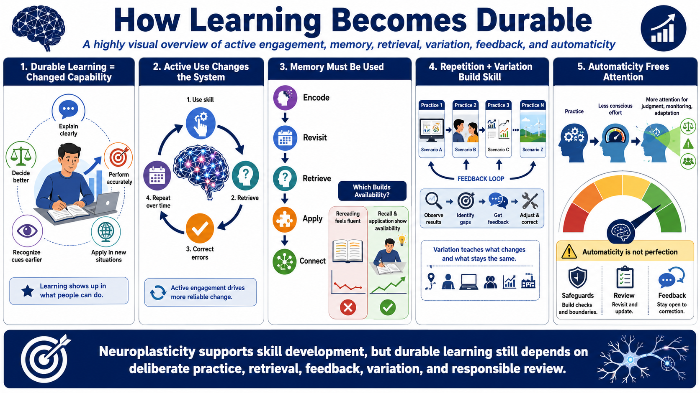

Learning, Memory, and Skill Formation
Connecting to LMS... Progress: in progress

Narration
Learning is durable change in capability. A learner can explain more clearly, make a better decision, perform a step more accurately, recognize a cue earlier, or apply an idea in a new situation. Neuroplasticity helps explain why durable learning requires active engagement. The nervous system changes more reliably when learners use the skill, retrieve information, correct errors, and repeat the process over time.
Memory formation is practical, not just academic. People need to encode information, revisit it, retrieve it, and connect it to existing knowledge. Practice and retrieval matter because they force the learner to bring information back and use it. Rereading may feel fluent, but recall and application provide stronger evidence that the learning is available when needed.
Repetition with variation helps skill formation because real work rarely looks exactly like the lesson. Exact repetition can build familiarity, but variation teaches what changes and what stays the same. A learner who practices several versions of a task is more likely to recognize the underlying pattern later. Feedback and correction make those repetitions useful rather than simply familiar.
Automaticity can develop when parts of a skill are practiced enough that they require less conscious effort. That can free attention for judgment, monitoring, and adaptation. But automaticity is not perfection. It needs safeguards, review, and continued feedback when the stakes are high. Neuroplasticity supports skill development, but it does not replace deliberate practice, good design, or responsible review.